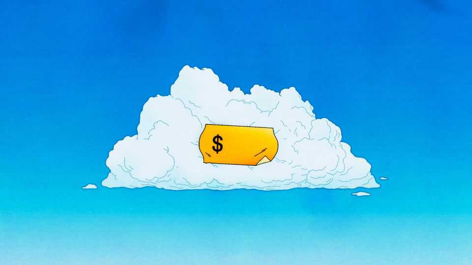

Finance & economics | Free exchange

How much is fresh air worth? Some, taking a deep, restorative breath at the top of a mountain or an Atlantic cliff-edge, might think it priceless. Fighting air pollution nevertheless costs actual money. Businesses need to spend on new devices; some industries might need to shrink or vanish; households need cleaner ways of cooking and heating their homes. On the other side of the ledger are the benefits from avoiding the health damage that breathing polluted air causes—especially to children, the already sick and the old. Deciding how much to spend on clean-up efforts is a classic economic problem, in that solving it involves weighing one side of the ledger against the other. But how can you perform cost-benefit analysis when the benefits involve people avoiding sickness or early death? Pricing fresh air turns into an even harder problem: putting a value on a human life.
It is one that America’s environmental watchdogs have decided to stop grappling with. The Environmental Protection Agency (EPA) announced last month that, when carrying out cost-benefit analyses of regulations, it would no longer put a price on the health benefits of clean air. There is simply too much uncertainty, officials argued, over how much such benefits are worth. Sceptics see this as a means by which to water down regulation. What is not counted does not count, as the old adage goes, and so refusing to put a price on fresh air is a way of discounting its benefits.
America’s federal government has required regulators to perform cost-benefit analyses since an executive order made in 1981 by Ronald Reagan, then president. His goal was to cut red tape to a level at which its costs could be clearly justified. Murray Weidenbaum, then the chair of the president’s Council of Economic Advisers, pointed out that if regulations on air pollution saved only a small number of lives, while costing a lot of money, it would be better spent elsewhere. Hospitals could receive the money to fund better cardiac care, for instance. Critics from the Democratic Party, sensing a ploy to advance business-friendly deregulation, responded that there was no way to put a monetary value on a human life. Squint, and that looks a bit like the EPA’s argument today.
The EPA of the 1980s, however, reached for the concept of the value of a statistical life (VSL). This is not the same as how much a person is worth. Actuaries had previously suggested pricing up the benefits of life-saving investment—or indeed purchasing life insurance—using the loss of earnings if the person in question died. Wages represent, at least to some extent, the price at which someone is willing to sell the hours of their limited lifespan. Scale that up over a whole lifetime, calculate the proportion of it they still have ahead of them, and you can work out a market value for their remaining years. This approach became known as the “human-capital method”. It fell out of favour, though, once economists pointed out that it could not be applied to those without a market wage. The old, the sick and those who eschewed paid work (to care for children, say) would be assigned a price of zero. Lifetime earning potential is not the same as lifetime value.
Thomas Schelling, who won the Nobel prize for economics in 2005, thought the human-capital method was badly flawed. The value of a life, he noted, depended on the evaluator’s perspective. The “identified life”, he pointed out, had a near-infinite value. “Let a six-year-old girl with brown hair need thousands of dollars for an operation that will prolong her life until Christmas, and the post office will be swamped with nickels and dimes to save her,” he wrote in 1968. Ask for higher taxes to fund better hospital care, however, and few will open their pocketbooks. The latter was the “statistical life”: the increased risk of mortality for some unidentifiable person. When it comes to regulatory policy, argued Schelling, what matters is how much people are willing to spend on this unknown person—who might turn out to be themselves.
Schelling’s insight was that people continually take risks which might result in their death. Driving, for instance, always carries the potential for a fatal road crash. Spend a bit more on cars’ safety features and you reduce the chance of death. Find out how much people are willing to spend to lower the odds of death by a specified amount, and you can derive the VSL. If 100,000 people are willing to spend $100 each to avoid a 1-in-100,000 chance of death, for instance, then $10m has been spent to prevent one expected death. Again, this does not tell you how much a life is worth, but rather how much people will pay to prevent it being lost. The EPA has historically used a VSL of $7.4m in 2006 dollars ($12m today), mostly calculated from studies of the higher wages demanded by workers to perform jobs that raise their risk of death. One paper looked at how the signing bonuses paid by America’s army varied with mortality rates during wars in Afghanistan and Iraq.
Britons are even less squeamish. Their National Health Service rations care using quality-adjusted life years (QALYs), an approach which follows the same logic as the VSL but takes each individual year of life expectancy and weights it for some measure of utility. A treatment that leaves a patient alive for longer, but in chronic pain, may contribute fewer QALYs than a less efficacious one with fewer side-effects. All else equal, interventions to protect statistical children are deemed more valuable than those to protect statistical pensioners, who have fewer years left.
These are all clever ways of trying to answer the unanswerable. Even so, the value of a life is definitely not zero. People tend to like being alive, and to be willing to pay to continue in this state. A best guess is better than none, and regulators need a benchmark against which to measure the costs of decisions. Economists are often accused of an anti-social coldness when they ask questions like how much a life is worth. Not asking would be far worse. ■
Subscribers to The Economist can sign up to our Opinion newsletter, which brings together the best of our leaders, columns, guest essays and reader correspondence.